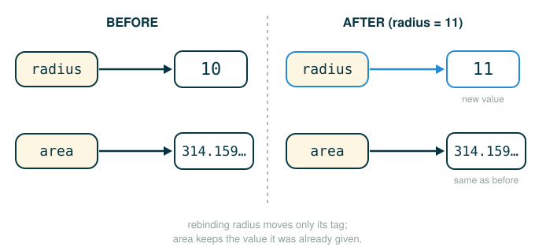
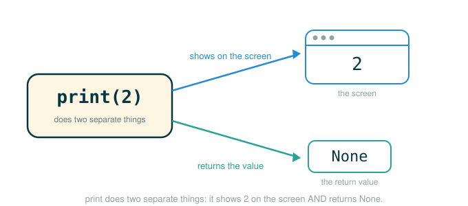

1.2 Elements of Programming: Names, Environments, and Print
In the last lesson you learned that an expression computes a value and a statement carries out an action. The single most important statement, the one you will write thousands of times, is the assignment statement: it gives a name to a value. This lesson is about what that name actually is, where Python keeps track of it, and what happens when you reassign it.
By the end you will be able to do four things: read an assignment statement as a two-step process instead of a math equation, picture the environment where Python stores every name, predict what a name evaluates to after the code around it changes, and separate what a function displays on screen from what it returns to your program. That last skill arrives through print, which is the first function in this course that does something other than hand back a value.
The habit from lesson 1.1 carries straight in: when code looks confusing, slow down and separate it into the smallest meaningful pieces, then evaluate one piece at a time.
Names Are Labels, Not the Thing Itself
Picture a coat-check counter. You hand over your coat and get a numbered tag. The tag is not the coat. It is a way to find the coat later. If you walk up and say "tag 14," the attendant goes and fetches whatever coat is currently filed under 14. Crucially, the tag does not remember what you were wearing yesterday, and it does not magically update if you swap your coat for a different one. It just points at whatever is filed under that number right now.
A name in Python works the same way. When you write radius = 10, you are not writing a mathematical fact. You are filing the value 10 under the tag radius. Later, when Python sees the name radius, it goes and fetches whatever is currently filed under that name. The name is a label that points to a value; it is never the value itself.
This is why the rest of the lesson keeps coming back to one question: what is this name bound to right now? Almost every confusing moment with names dissolves once you ask it.
Assignment: Evaluate the Right, Then Bind the Left
Here is the smallest assignment statement:
# (1)
radius = 10
Python does not read = as "is equal to." It reads = as an instruction to bind a name. The order it works in is fixed and worth memorizing.
radius = 10
├─ 10 .......... evaluate the expression on the right first → the value 10
├─ = ........... bind: file that value under the name on the left
├─ radius ...... the name (the label) that will point to the value
└─ performs: creates the binding radius → 10 in the current environmentTwo machine steps, always in this order: first evaluate the right-hand expression, then bind the left-hand name to the result. Nothing is printed; an assignment is a statement, and a statement carries out an action rather than producing a value.
Once the binding exists, evaluating the name fetches the value it points to:
# (2)
radius
10And the name can be used anywhere a value is expected, including inside a larger expression:
# (3)
2 * radius
Python looks up radius, finds 10, and computes the product:
20The anatomy of that lookup-and-compute:
2 * radius
├─ 2 ........... the integer two
├─ * ........... the multiplication operator
├─ radius ...... look this name up in the environment → 10
└─ evaluates to 20The Environment Stores Every Binding
Where does Python keep the fact that radius → 10? In the environment: the collection of name-to-value bindings the interpreter can currently use. At the top level of a program, those bindings live in a single table called the global frame.
Run two assignments in a row:
# (4)
radius = 10
diameter = 2 * radius
After both lines, the global frame holds two bindings:
Global frame
radius → 10
diameter → 20Here is the subtle point that becomes one of the most important mental models in this chapter. When Python evaluated 2 * radius, it looked up radius, found 10, computed 20, and stored the finished value 20 under diameter. It did not store the formula 2 * radius. The binding diameter → 20 is a snapshot of work Python already completed, not a live recipe that keeps recomputing.
Assignment stores the value produced now.
It does not store a formula that keeps updating forever.So if a later line asks for diameter, Python does not reopen 2 * radius. It just reads the value 20 straight out of the frame.
Imported Names Are Bindings Too
An import statement also adds bindings to the environment. The math module ships a name pi bound to a decimal approximation of the mathematical constant .
# (5)
from math import pi
After this line, pi is a name in the environment like any other, and you can use it anywhere a value is expected. The source text shows it inside a small expression:
# (6)
pi * 71 / 223
Python looks up pi, multiplies by 71, then divides by 223, evaluating left to right:
1.0002380197528042There is nothing special about the name pi. It is just a binding that happens to point at a useful number. Now use it in the circle formulas, with radius bound to 10:
# (7)
radius = 10
area, circumference = pi * radius * radius, 2 * pi * radius
Don't worry about the two-names-at-once form yet; for now just read it as two assignments, one to area and one to circumference. We dissect exactly how Python lines up the two sides in a moment.
The geometry behind those two expressions is:
Asking for each result gives the official values verbatim:
# (8)
area
314.1592653589793# (9)
circumference
62.83185307179586Reassigning a Name Does Not Update Old Results
This is the trap that catches almost every beginner, so study it slowly. Names look like algebra, and in algebra "" stays true forever as changes. Python is not algebra. A binding is a snapshot, not a living equation.
Continuing the session above, change radius:
# (10)
radius = 11
Now ask for area again:
# (11)
area
314.1592653589793The value did not change. area was bound back in line (7) to the number Python computed while radius was 10. Rebinding radius to 11 files a new coat under the radius tag, but it does not reach back in time and recompute area. The binding area → 314.1592653589793 simply sits there, exactly as it was stored.
Picture the two tags before and after the reassignment: only the radius tag moves to a new value, while the area tag stays pinned to the number it was already given.

If you want the area for the new radius, you must run a new assignment, which evaluates the right side again using the current value of radius:
# (12)
area = pi * radius * radius
380.1327110843649This time Python looks up radius, finds 11, computes , and rebinds area to that fresh value. The rule, stated once so it sticks:
A name holds the value computed at the moment of assignment.
To get a new value, run a new assignment.Following the Line: Multiple Assignment
Line (7) bound two names in one statement. Python allows this, and it has a precise rule for how the two sides line up.
# (13)
area, circumference = pi * radius * radius, 2 * pi * radius
area, circumference = pi * radius * radius, 2 * pi * radius
├─ pi * radius * radius .... evaluate the FIRST right-side expression → area's value
├─ 2 * pi * radius ........ evaluate the SECOND right-side expression → circumference's value
├─ = ...................... bind, pairing left names with right values in order
├─ area .................. first name ← first value
├─ circumference ......... second name ← second value
└─ performs: binds area and circumference to the two computed valuesPython pairs the first value with the first name and the second value with the second name. The statement above is exactly equivalent to writing the two assignments separately:
# (14)
area = pi * radius * radius
circumference = 2 * pi * radius
The number of names on the left must match the number of values on the right. Multiple assignment is convenient, but mismatched counts are a common source of errors, so keep the two sides balanced.
Evaluate Everything on the Right First: The Swap
Multiple assignment hides a rule that matters enormously: all expressions to the right of = are evaluated before any name on the left is bound. The cleanest demonstration is swapping two values, which the source shows directly.
# (15)
x, y = 3, 4.5
Global frame
x → 3
y → 4.5Now the swap:
# (16)
y, x = x, y
y, x = x, y
├─ x ........... evaluate first right expression → 3 (the OLD x)
├─ y ........... evaluate second right expression → 4.5 (the OLD y)
├─ = ........... only now bind, pairing left names with those captured values
├─ y ........... first name ← 3
├─ x ........... second name ← 4.5
└─ performs: x and y are exchangedBecause the right side is fully evaluated before any binding happens, Python captures the old values 3 and 4.5 first, and only then writes them into y and x. The assignment to y cannot clobber the value of x partway through, because x was already read. Confirm it:
# (17)
x
4.5# (18)
y
3If Python had bound y first and then evaluated x, both names would have ended up 3. The "evaluate the whole right side first" rule is precisely what makes a one-line swap work.
Names Can Point to Functions
A name is bound to a value, and a function is a value, so a name can point to a function. The source demonstrates this with the built-in max.
# (19)
f = max
Evaluating f now shows the function object it points to:
# (20)
f
<built-in function max>Because f points at the same function value as max, calling f does exactly what calling max does:
# (21)
f(2, 3, 4)
4f(2, 3, 4)
├─ f ........... look up the name → the built-in max function
├─ ( ........... begin the inputs
├─ 2, 3, 4 ..... three arguments, separated by commas
├─ ) ........... end the inputs
└─ evaluates to 4 (the largest argument)This is not a special feature. It is ordinary assignment; the value just happens to be a function. And like any name, f can be rebound to something else entirely:
# (22)
f = 2
# (23)
f
2The name f was never permanently wired to max. It pointed at the same value for a while, and f = 2 files a different value under the tag. Picture the frame before and after:
Before f = 2:
max → built-in max function
f → built-in max function
After f = 2:
max → built-in max function
f → 2Names Can Shadow Built-ins (and Why That Bites)
Python lets you bind almost any valid name, even one that already names a useful built-in function. Nothing stops you from doing this:
# (24)
max = 5
# (25)
max
5After line (24), the name max in this environment points to the integer 5, not to the function. When Python later sees max, it finds 5 first and stops looking; it does not keep searching for the built-in once a binding exists.
So the very same kind of call that worked through f now fails:
# (26)
max(2, 3, 4)
Python tries to call the value bound to max, but that value is 5, and an integer is not callable. The call raises an error. The official text puts it plainly: attempting to call max(2, 3, 4) will cause an error, because max is no longer bound to a function.
The lesson is not "never reuse names." It is to avoid shadowing names you still need, especially common built-ins like max, min, sum, len, list, str, and print. When a built-in suddenly "breaks," the first thing to check is whether you accidentally rebound its name.
Pure Functions and Non-Pure Functions
Every function you have called so far has been pure: it takes inputs, returns a value, and does nothing else. A pure function has two defining properties. It has no side effects (no effect on the world beyond the value it returns), and it always returns the same value when called again with the same arguments. The function abs is pure:
# (27)
abs(-2)
2Call abs(-2) a thousand times and you get 2 every time, and nothing else in the world changes.
A non-pure function does something extra: it produces a side effect, an observable change beyond the returned value. The first and most important non-pure function in this course is print, whose side effect is displaying text on the screen.
# (28)
print(1, 2, 3)
1 2 3The commas separate the three arguments handed to print. The single spaces between the numbers in the output are part of how print formats its display; they are not commas and not part of any value.
Here is the part that trips people up. When you run print(1, 2, 3), the text 1 2 3 appears on screen, but that text is the side effect, not the return value. The value print hands back to your program is always None. The interactive interpreter (the prompt where you type one line and immediately see its value) automatically displays the value of any expression you type, but it makes one exception: it stays silent when that value is None. So it looks like print "returned" the text you see, when in fact it returned nothing useful.
A clean way to hold this: a pure function like abs is a chef who hands you a finished dish (the return value). print is a town crier who shouts an announcement (the side effect) and then hands you nothing. Both did something; only one gave you back a value.
Picture a single print(2) call sending its two results to two different places at once: the text goes to the screen, and the return value goes back to your program.

So make a habit of asking two separate questions about every print call:
What does it DISPLAY on screen? (the side effect)
What does it RETURN to the program? (always None)For print(1, 2, 3): it displays 1 2 3, and it returns None.
None Is a Real Value
None is Python's value for "no useful value." It is what non-pure functions like print hand back. You cannot see it in the interactive interpreter by accident, because the interpreter hides None results, so you have to catch it deliberately by storing it.
# (29)
two = print(2)
Running line (29) does two things. As a side effect, it displays:
2Then it binds two to the return value of print, which is None. Now read the stored value back out:
# (30)
print(two)
NoneTrace the logic: two does not hold 2, even though 2 appeared on screen during line (29). The 2 was the side effect; the return value was None, and that is what got filed under two. Passing two to print then displays None. The screen output of a function and its return value are two different things, and print is where that distinction first matters.
Nested print Calls: A Stress Test for Evaluation Order
This next example looks small but quietly tests everything in the lesson: argument evaluation order, side effects, and return values all at once.
# (31)
print(print(1), print(2))
1
2
None NoneTo run the outer print, Python must first evaluate its two arguments, left to right. Each argument is itself a print call. Walk it step by step.
print(print(1), print(2))
│
├─ evaluate first argument: print(1)
│ side effect: displays 1
│ returns: None
│
├─ evaluate second argument: print(2)
│ side effect: displays 2
│ returns: None
│
└─ now call the OUTER print with the two returned values: None, None
side effect: displays None None
returns: None (hidden by the interpreter)That is why three lines appear, in this exact order: 1 from the inner left call, 2 from the inner right call, then None None from the outer call receiving the two None return values. If you tracked the displayed text and confused it with the return values, you would have predicted the wrong output. Separating "what is displayed" from "what is returned" is exactly the skill this example rewards.
A Short Environment Trace
Let us combine the two big ideas, snapshot bindings and the print/None distinction, in one walk-through. Read each line and update the global frame in your head before checking the result.
# (32)
from math import pi
radius = 10
area = pi * radius * radius
radius = 11
new_area = pi * radius * radius
shown = print(new_area)
Step by step:
from math import pi
Global frame: pi → 3.141592653589793
radius = 10
Global frame: pi → ... , radius → 10
area = pi * radius * radius
look up radius (10), compute → 314.1592653589793
Global frame: ... , area → 314.1592653589793
radius = 11
rebind only radius; area is untouched
Global frame: ... , radius → 11, area → 314.1592653589793
new_area = pi * radius * radius
look up radius (now 11), compute → 380.1327110843649
Global frame: ... , new_area → 380.1327110843649
shown = print(new_area)
side effect: displays 380.1327110843649
print returns None, so shown is bound to None
Global frame: ... , shown → NoneFinal global frame:
Global frame
pi → 3.141592653589793
radius → 11
area → 314.1592653589793
new_area → 380.1327110843649
shown → NoneThe frame makes two facts visible at a glance. area still holds the value it was given while radius was 10, because reassigning radius never recomputes old bindings. And shown is None, not the number that appeared on screen, because print displays text as a side effect but returns None.
⚠Common Beginner Traps
| Mistake | What Goes Wrong | Safer Question |
|---|---|---|
Reading = as permanent equality |
The student expects old results to update automatically, so a name computed earlier is read as the wrong, stale value | When was the right side evaluated? |
| Expecting an assignment to show output | The student waits for a result on screen, but an assignment displays nothing; only the binding changes | Is this line a statement that acts, or an expression that produces a value? |
| Forgetting names can point to functions | f = max seems mysterious even though it is ordinary assignment |
What value is this name bound to right now? |
| Shadowing a built-in name | A useful name such as max now points to an integer, so a later call like max(2, 3, 4) raises an error because an integer is not callable |
Am I reusing a name Python already uses? |
| Treating printed output as the return value | A later expression receives None instead of the text it expected |
Did this function return a value, or only display one? |
| Assuming the right side is bound left-to-right | A swap like y, x = x, y is mispredicted, leaving both names holding the same value |
Are all right-side expressions evaluated before any binding? |
✓Check Your Understanding
- After running
side = 4, thenarea = side * side, thenside = 6, what doesprint(area)display, and what doesprint(side * side)display? - After
radius = 11, why does the earlierareakeep its old value314.1592653589793? - In
y, x = x, y, why doxandyactually swap instead of both becoming the same value? - After
f = max, why canf(2, 3, 4)return4? And aftermax = 5, why doesmax(2, 3, 4)fail? - What value does
two = print(2)store intwo, and what appears on screen while that line runs? - Predict the full screen output of
print(print(1), print(2))and explain the order.
Show the answers
print(area)displays16, becauseareawas bound to the value computed whilesidewas4and rebindingsidedoes not recompute it.print(side * side)displays36, because that expression is evaluated now, withsidecurrently6.areawas bound once, to the value computed whileradiuswas10. A binding stores the finished value, not a live formula, so rebindingradiusdoes not recomputearea.- Because all expressions on the right of
=are evaluated before any name on the left is bound. Python reads the oldx(3) and oldy(4.5) first, then assigns them toyandx. fis bound to the same function value asmax, so calling it runsmax. Aftermax = 5, the namemaxpoints to the integer5, which is not callable, so the call raises an error.twois bound toNone(the return value ofprint). On screen,2is displayed as the side effect.- The output is
1, then2, thenNone None. Python evaluates the two inner calls first (displaying1and2, each returningNone), then calls the outerprintwithNoneandNone, which displaysNone None.
§Summary
A name is a label in an environment, not the value itself; at the top level those labels live in the global frame. Assignment evaluates the right-hand expression first, then binds the left-hand name to the finished value, and in multiple assignment the entire right side is evaluated before any binding happens, which is what makes a swap work. A binding is a snapshot, so reassigning one name never recomputes names derived from it earlier. Names can point to numbers, function values, or None, and rebinding a name simply changes what future lookups find, including when it shadows a built-in. Finally, print is the first non-pure function in the course: it displays text as a side effect but returns None, which forces the central distinction between what a function shows on screen and what value it hands back to your program.
▶Step-Through Checkpoint
This block gathers the whole lesson into one short program: snapshot bindings, a swap, and the difference between what print displays and what it returns. Drawing it as an environment diagram keeps everything in one global frame, where you can watch the radius tag move from 10 to 11 while area stays pinned to its old number, the x and y tags trade values in the swap, and shown ends up bound to None rather than the figure that printed to the screen. Before you step through it, write down two predictions: which lines rebind a name that already exists rather than creating a new one, and the complete final global frame — every name it will hold, with the value bound to each, when the last line finishes.
# (33)
from math import pi
radius = 10
area = pi * radius * radius
radius = 11
new_area = pi * radius * radius
x, y = 3, 4.5
y, x = x, y
shown = print(new_area)
Step through it one line at a time and check each prediction as the bindings appear. The global frame ends with seven names. Two lines only rebind: radius = 11 moves the radius tag without touching area, and the swap rewrites both x and y. Because the whole right side is read before either name is bound, the old 3 and 4.5 are captured first, so x ends at 4.5 and y at 3. The number printed at the end is new_area's value, computed from the current radius, while area still holds the snapshot it was given when radius was 10. And shown is bound to None, because the text on screen was print's side effect, not its return value.